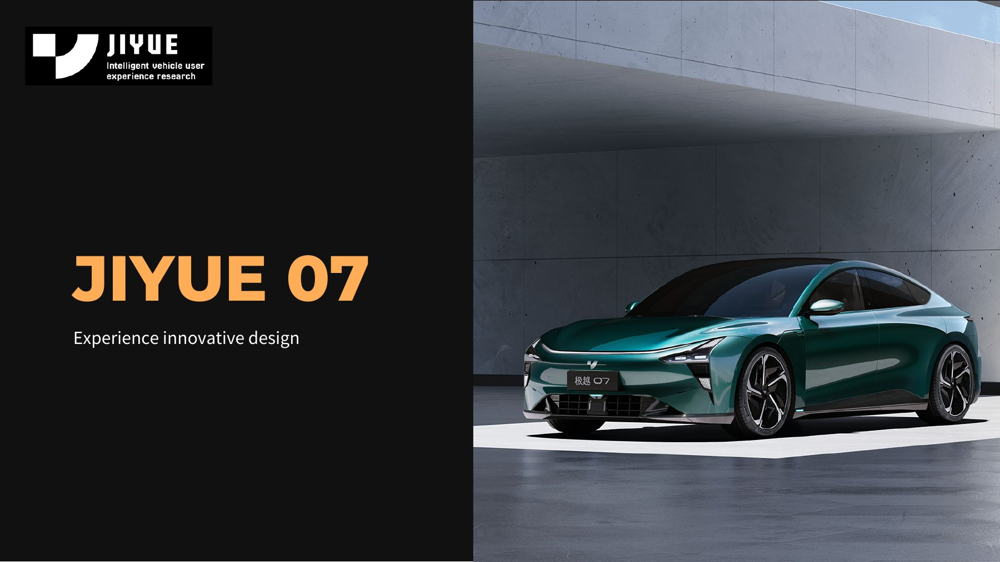
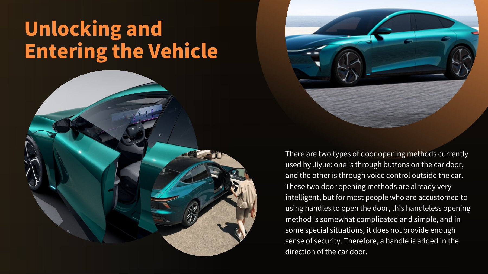
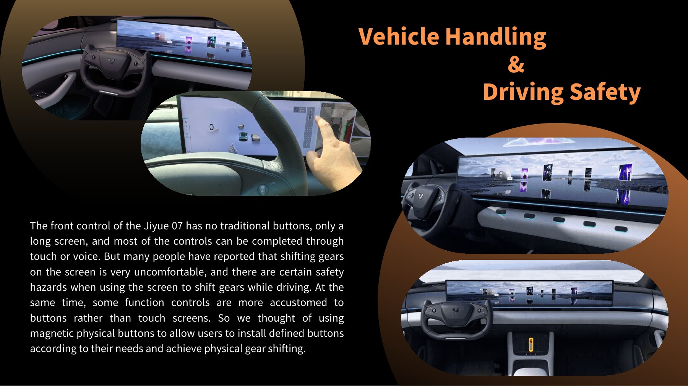
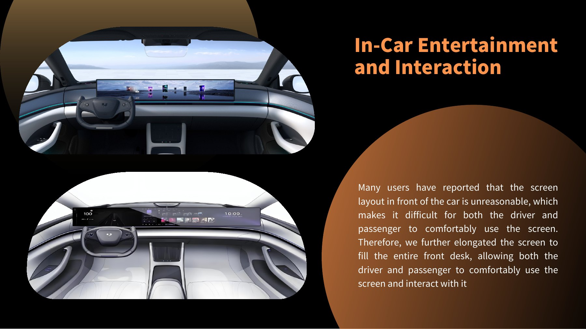
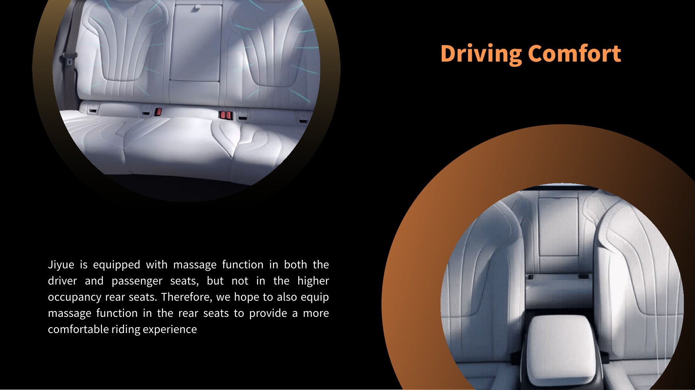
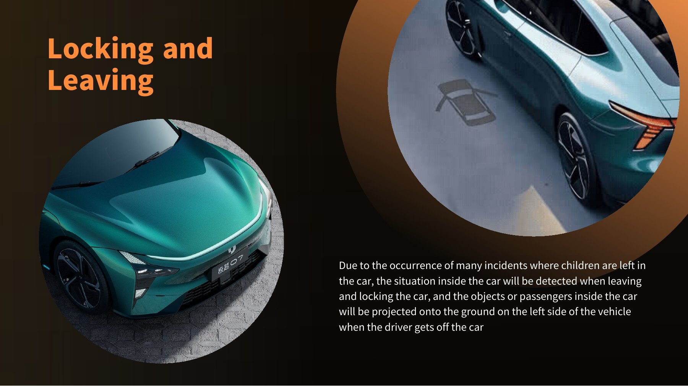
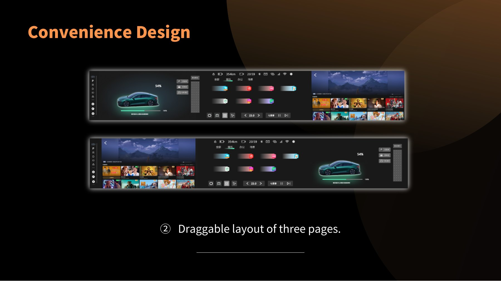
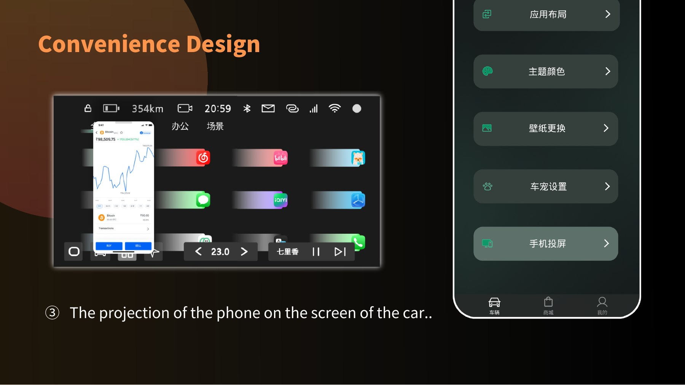

市场与竞品
梳理智能汽车发展趋势，对比实体控制、座舱布局与个性化体验。

极越 07 将许多传统操作转向屏幕和语音。研究关注的不是增加更多功能，而是人在真实用车过程中，何时需要熟悉的操作、明确的反馈与安全感。
梳理智能汽车发展趋势，对比实体控制、座舱布局与个性化体验。
走进极越门店，观察车门、屏幕及常用功能在实际使用中的操作路径。
与销售人员和车辆工程背景受访者交流，理解产品特点与新用户的适应门槛。
DESIGN FOCUS
旅程地图把每一步的想法、动作与情绪并置。我们因此将设计重点落在几处容易犹豫的瞬间：如何开门、如何快速操作、信息该在哪里出现，以及离车时如何确认车内状态。
方案从硬件与环境反馈切入，保留智能化的便利，同时让关键操作更容易被看见、被理解、被确认。
按钮与语音让开门变得智能，却不一定符合每个人的直觉。概念方案在车门方向增加可识别的把手，让第一次接近车辆的人也能迅速判断从哪里进入。
关键词 / 熟悉感 · 可识别性
当挡位与常用车控依赖触屏，驾驶者需要在操作前先找到入口。方案探索可自定义的磁吸实体按键与实体换挡，为高频动作提供更直接的触觉定位。
关键词 / 盲操 · 触觉反馈
围绕主副驾共同使用的情境，方案延展横向屏幕，并重新安排驾驶信息、中央控制与副驾应用的位置，让不同任务在同一座舱里各有清晰的区域。
关键词 / 分区 · 协作
从乘坐者视角重新考虑座椅体验，将前排已有的按摩功能延伸至后排，让陪同出行的人也能获得同等关注。
关键词 / 乘坐体验 · 照顾
锁车后，方案设想检测车内乘客与物品，并通过车侧地面投影提醒驾驶者确认，回应儿童或物品被遗留的担忧。
关键词 / 安全提醒 · 状态确认
围绕 35.6 英寸一体屏，我们将信息分为驾驶、控制与应用三个区域。重要驾驶信息留在主驾附近，中央负责调度，副驾获得更独立的内容空间。

导航、车速、电量等与行驶直接相关的信息靠近驾驶视线。
承担全局切换与车控入口，让左右两侧内容能被快速协调。
容纳应用与娱乐内容，为副驾驶保留更从容的互动区域。
车机界面进一步整理快捷入口与应用分区，移动端则承接布局、主题和车宠设置。界面保持深色基底，以蓝绿和紫色区分控制与智能交互。
侧边栏集中高频控制，三块内容可以按情境拖动安排。

通过手机投屏，把已在使用的内容带到车内。

用户可重新编排应用分区，并调整主题色与壁纸。

可选择的 Simo 形象，让车内指令对话更亲切，也为个性化留下空间。

从上车到离车，让熟悉的操作与智能功能自然衔接。